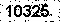

我的简历
我的简历
|
姓名张云龙 | John
|
|
政治面貌中共正式党员
|
|
本科安徽工业大学 | 软件工程
|
|
电话/微信185 5507 5682
|
|
邮箱11099298297@qq.com
|
|
邮箱2chuchunshili@proton.me
|
|
项目全栈开发、Unity开发、数据库集群、高可用服务集群解决方案、Devops自动化运维，Docker集群容器编排。
|
|
管理需求分析、项目（任务/进度/质量）管理、代码分支管理，团队管理。
|
|
AI相关使用Pytorch框架，CNN、LSTM、UNet、信号处理、滤波、降噪，机器学习常用算法KNN、SVM、回归等。
|

， 排除图像的干扰点、干扰线后，进行二值化操作，提取0-9字模及显著特征， 比对后按置信度排序，置信度最高者即为识别结果。曾用于我校学长研发的”微行工大“APP上，为查成绩、考勤提供免输验证码自动爬虫服务。客户需求分析，产品设计，产品跟踪，及后续产品优化工作；
技术研发以及资金对接安全保障；
集成第三方API开发，提供短信验证码、ISBN解析、定位解析、对象存储等服务；
配置微信公众号相关参数，把握上线后细节问题，稳定部署到服务器；
需求分析，产品设计、研发，产品跟踪，及后续产品优化工作；
稳定部署到服务器；
负责信息化微服务平台、十大事件投票系统的研发；
需求分析，产品设计、研发，产品跟踪，及后续产品优化工作；
稳定部署到服务器；
负责易班易查询模块的研发；
医疗器械算法研发、优化生物信号处理算法；
MATLAB分析仿真、BGP与ECG信号处理、信号滤波；
UNet医学影像分割、处理数字特征；
张云龙 | Join
185 5507 5682
chuchunshili@proton.me